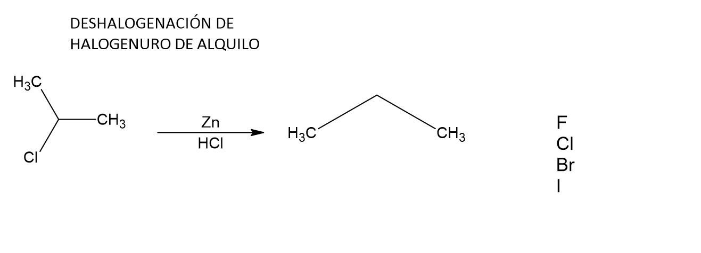

Síntesis orgánica y adición
ALCANOS

- Hidrogenación del Alquenos: La hidrogenación de alquenos es una reacción catalizada por metales que convierte los enlaces dobles carbono-carbono de los alquenos en enlaces simples carbono-carbono, mediante la adición de hidrógeno molecular. Esta reacción es fundamental en la síntesis de alquanos saturados y tiene aplicaciones significativas en la industria alimentaria, química y farmacéutica. Al convertir aceites insaturados en grasas sólidas, por ejemplo, se produce margarina. Además, en la síntesis de productos químicos y farmacéuticos, esta reacción proporciona una vía eficiente para modificar y sintetizar moléculas orgánicas, ampliando así sus aplicaciones y propiedades.

- Deshalogenación de halogenuro de alquilo: La hidrogenación de alquenos es una reacción catalizada por metales que convierte los enlaces dobles carbono-carbono de los alquenos en enlaces simples carbono-carbono, mediante la adición de hidrógeno molecular. Esta reacción es fundamental en la síntesis de alquanos saturados y tiene aplicaciones significativas en la industria alimentaria, química y farmacéutica. Al convertir aceites insaturados en grasas sólidas, por ejemplo, se produce margarina. Además, en la síntesis de productos químicos y farmacéuticos, esta reacción proporciona una vía eficiente para modificar y sintetizar moléculas orgánicas, ampliando así sus aplicaciones y propiedades.

- Hidrolisis: La hidrólisis es un proceso químico en el cual una sustancia reacciona con agua para producir otras sustancias mediante la ruptura de enlaces químicos. En el contexto de la síntesis orgánica, la hidrólisis de compuestos orgánicos implica la ruptura de enlaces carbono-heteroátomo bajo condiciones específicas. Por ejemplo, la hidrólisis de ésteres conduce a la formación de un alcohol y un ácido carboxílico. Este proceso es esencial en la industria química para la fabricación de una amplia variedad de productos, desde alimentos y productos farmacéuticos hasta productos químicos industriales.

- Síntesis de Wurtz: La síntesis de Wurtz es una reacción orgánica que permite la formación de enlaces carbono-carbono mediante la combinación de halogenuros de alquilo con sodio metálico en presencia de un solvente inerte como el tetrahidrofurano (THF). En esta reacción, los halogenuros de alquilo son deshalogenados por el sodio, formando radical alquilo que luego se combina con otro radical alquilo para formar un enlace carbono-carbono. Esta reacción es particularmente útil para la síntesis de alcanos simétricos y asimétricos de cadena lineal, así como para la preparación de compuestos orgánicos complejos.

- Combustión: La combustión es una reacción química exotérmica en la cual una sustancia reacciona rápidamente con oxígeno, liberando energía en forma de calor y luz. En el caso de los hidrocarburos, como los alcanos, la combustión ocurre cuando se queman en presencia de oxígeno para producir dióxido de carbono y agua como productos principales. La ecuación general para la combustión de un alcano es CnH2n+2 + (3n+1)/2 O2 → n CO2 + (n+1) H2O, donde "n" representa el número de átomos de carbono en el alc

- Halogenación: La halogenación es un tipo de reacción química en la que un halógeno, como el cloro (Cl2) o el bromo (Br2), se agrega a un compuesto orgánico. En el contexto de los hidrocarburos, como los alcanos, la halogenación implica la sustitución de uno o más átomos de hidrógeno por átomos de halógeno en presencia de luz ultravioleta o calor. Por ejemplo, en la halogenación de un alcano como el metano (CH4), se puede producir clorometano (CH3Cl) o bromometano (CH3Br). Esta reacción es importante en la síntesis de compuestos orgánicos halogenados, que tienen una variedad de aplicaciones en la industria química, como disolventes, productos farmacéuticos y pesticidas.
ALQUENOS
- Hidratación de alquenos: La hidrogenación de alquenos es una reacción catalizada por metales que convierte los enlaces dobles carbono-carbono de los alquenos en enlaces simples carbono-carbono, mediante la adición de hidrógeno molecular. Esta reacción es fundamental en la síntesis de alquanos saturados y tiene aplicaciones significativas en la industria alimentaria, química y farmacéutica. Al convertir aceites insaturados en grasas sólidas, por ejemplo, se produce margarina. Además, en la síntesis de productos químicos y farmacéuticos, esta reacción proporciona una vía eficiente para modificar y sintetizar moléculas orgánicas, ampliando así sus aplicaciones y propiedades.
.jpeg)
- Deshidroalogenación de Haluro de Alquilo: La deshidrohalogenación de haluros de alquilo es una reacción química en la que se eliminan un átomo de halógeno y un átomo de hidrógeno de un haluro de alquilo, resultando en la formación de un alqueno. Esta reacción es fundamental en la química orgánica para la síntesis de alquenos y se lleva a cabo mediante la acción de una base fuerte. Tiene aplicaciones importantes en la industria química, permitiendo la producción de compuestos insaturados que son precursores clave en la fabricación de plásticos, medicamentos y otros productos químicos especializados.
.jpeg)
- Hidrogenación de Alquilo: La hidrogenación de alquinos es una reacción catalizada por metales que convierte los enlaces triples carbono-carbono de los alquinos en enlaces simples carbono-carbono mediante la adición de hidrógeno molecular. Esta reacción es crucial en la síntesis de alcanos saturados y tiene aplicaciones significativas en la industria química y farmacéutica. Por ejemplo, en la industria química, esta reacción permite la producción de alcanos a partir de alquinos, que pueden ser utilizados como combustibles o como materia prima para la fabricación de otros productos químicos. En la industria farmacéutica, la hidrogenación de alquinos es utilizada para la síntesis de compuestos orgánicos complejos, mejorando la eficacia y propiedades de los medicamentos.
.jpeg)
- Deshalogenación de dialuro Vecinales: La deshalogenación de dialuros vecinales es una reacción química en la que se eliminan átomos de halógeno adyacentes de un compuesto orgánico, resultando en la formación de un alqueno. Esta reacción es fundamental para la síntesis de alquenos a partir de compuestos halogenados y se lleva a cabo mediante el uso de agentes reductores. Tiene aplicaciones importantes en la industria química y farmacéutica, permitiendo la producción de alquenos que son precursores clave en la fabricación de polímeros, medicamentos y otros productos químicos especializados.
.jpeg)
- Adición: La adición de halógenos a alquenos es una reacción en la que un alqueno reacciona con un halógeno, como cloro o bromo, para formar un dihalogenuro vecinal. Esta reacción es importante en la química orgánica para la síntesis de compuestos halogenados, que son intermedios clave en la fabricación de diversos productos químicos. Tiene aplicaciones significativas en la industria química, donde se utiliza para la producción de solventes, plásticos y fármacos. La adición de halógenos a alquenos también es una herramienta útil en la determinación estructural de compuestos orgánicos, ya que puede revelar la presencia de enlaces dobles.
.jpeg)
- Markovnikov: La regla de Markovnikov es un principio en la química orgánica que predice el resultado de la adición de reactivos a alquenos asimétricos. Según esta regla, durante la adición de un ácido halogénico (HX) a un alqueno, el átomo de hidrógeno (H) se une al carbono del doble enlace que tiene más hidrógenos originalmente, mientras que el halógeno (X) se une al carbono que tiene menos hidrógenos. Este principio es crucial para entender y predecir la formación de productos en reacciones de adición en química orgánica.
.jpeg)
- Ruptura: La ruptura de enlaces en química orgánica se refiere al proceso en el que los enlaces químicos entre átomos se rompen durante una reacción. Esta ruptura puede ser heterolítica, donde ambos electrones del enlace se asignan a uno de los átomos, o homolítica, donde los electrones se dividen equitativamente entre los átomos formándose radicales libres. La ruptura de enlaces es crucial para la formación de nuevos enlaces y la transformación de moléculas en diversas reacciones químicas. Es un concepto central en la química orgánica que permite entender y predecir la reactividad y los productos de las reacciones químicas.
.jpeg)
- Permanganato de Potacio: El permanganato de potasio (KMnO₄) es un compuesto químico que actúa como un potente agente oxidante. Es utilizado en química analítica para titulaciones redox, en el tratamiento de agua para eliminar impurezas, y en la industria farmacéutica y educativa para diversas aplicaciones debido a sus propiedades oxidantes y colorantes.
ALQUINOS
.jpeg)
- Deshidroalogenación de Haluros Vecinales: La deshidrohalogenación de haluros vecinales es una reacción química en la que se eliminan dos átomos de halógeno adyacentes de un dialuro vecinal, resultando en la formación de un alqueno. Esta reacción es importante en la síntesis de alquenos a partir de compuestos halogenados y se lleva a cabo mediante la acción de una base fuerte. Es significativa en la química orgánica para la producción de compuestos insaturados que son precursores en la fabricación de polímeros y otros productos químicos especializados.
.jpeg)
- Halogenuro de Alquilo: Un haluro de alquilo es un compuesto orgánico en el que un átomo de halógeno (flúor, cloro, bromo o yodo) está unido a un átomo de carbono en una cadena de alquilo. Estos compuestos son importantes en química orgánica y se utilizan como reactivos en diversas reacciones químicas, como la sustitución nucleofílica y la eliminación. Los haluros de alquilo sirven como intermediarios en la síntesis de productos químicos, incluyendo fármacos, plásticos y otros compuestos orgánicos.
.jpeg)
- Deshalogenación tetrahiluro Vecinales: La deshalogenación de tetrahiluros vecinales es una reacción química en la que se eliminan dos pares de átomos de halógeno adyacentes de un tetrahidruro vecinal, formando un alqueno. Esta reacción, que utiliza un agente reductor o una base fuerte, es significativa en la química orgánica para la síntesis de alquenos a partir de compuestos halogenados. Es utilizada para preparar compuestos insaturados que son intermediarios en la fabricación de productos químicos y en la investigación química.
.jpeg)
- Hidrogenación: La hidrogenación es una reacción química en la que se añade hidrógeno (H₂) a un compuesto insaturado, como un alqueno o un alquino, para convertirlo en un compuesto saturado, como un alcano. Esta reacción se lleva a cabo en presencia de un catalizador metálico, como platino, paladio o níquel. La hidrogenación es fundamental en la industria para la producción de aceites y grasas, así como en la síntesis de productos químicos y farmacéuticos, al permitir la transformación de compuestos insaturados en formas más estables y útiles.
.jpeg)
- Halogenación: La halogenación es una reacción química en la que uno o más átomos de halógeno (flúor, cloro, bromo o yodo) se añaden a un compuesto orgánico. Esta reacción puede llevarse a cabo con diversas clases de compuestos, incluyendo alquenos, alquinos y hidrocarburos saturados. La halogenación es importante en la química orgánica para la modificación de estructuras moleculares, y se utiliza en la síntesis de una amplia gama de productos químicos, incluidos plásticos, fármacos y agroquímicos.
.jpeg){kind=link}
- Adición de halogenuro de hidrógeno: La adición de halogenuro de hidrógeno a un alqueno es una reacción química en la que un halogenuro de hidrógeno (HX), como HCl, HBr o HI, se añade a un doble enlace de un alqueno. Durante esta reacción, el átomo de hidrógeno se une al carbono del doble enlace que tiene más átomos de hidrógeno, mientras que el halógeno se une al carbono que tiene menos átomos de hidrógeno. Esta reacción es importante en la química orgánica para la síntesis de haluros de alquilo y para la formación de productos químicos con grupos funcionales específicos.

- Adición de agua: La adición de agua a un alqueno es una reacción química en la que una molécula de agua se añade al doble enlace de un alqueno, produciendo un alcohol. La reacción se realiza en presencia de un ácido fuerte que actúa como catalizador. En esta reacción, el grupo hidroxilo (OH) se une al carbono del doble enlace que tiene más átomos de hidrógeno, mientras que el hidrógeno se une al carbono con menos átomos de hidrógeno. La adición de agua es fundamental en la síntesis de alcoholes a partir de alquenos y tiene aplicaciones importantes en la industria química.
ALCOHOLES
.jpeg)
- Halogenuro de hidrógeno:Un halogenuro de hidrógeno es un compuesto químico que contiene un átomo de halógeno (flúor, cloro, bromo o yodo) unido a un átomo de hidrógeno. Estos compuestos se utilizan frecuentemente en reacciones de adición a alquenos y alquinos, donde el halogenuro de hidrógeno se añade a los enlaces dobles o triples, generando haluros de alquilo. Los halogenuros de hidrógeno son importantes en la síntesis orgánica para la modificación de estructuras moleculares y en la fabricación de productos químicos y farmacéuticos.
.jpeg)
- Deshidratación: La deshidratación es una reacción química en la que se elimina una molécula de agua (H₂O) de un compuesto orgánico. En química orgánica, este proceso a menudo se realiza sobre alcoholes para formar alquenos mediante la eliminación de una molécula de agua. La deshidratación se lleva a cabo típicamente en presencia de un ácido fuerte que actúa como catalizador. Esta reacción es importante en la síntesis de alquenos y en la formación de compuestos orgánicos con estructuras más complejas, y tiene aplicaciones en la industria química para la producción de diversos productos químicos y materiales.
- Reacción ácido base: Una reacción ácido-base es un tipo de reacción química en la que un ácido (una sustancia que dona protones, H⁺) reacciona con una base (una sustancia que acepta protones) para formar una sal y agua. Este proceso se basa en la transferencia de protones entre los reactivos. En una reacción ácido-base, el ácido cede un ion hidrógeno (H⁺) a la base, que a su vez lo acepta. Las reacciones ácido-base son fundamentales en química, ya que son clave en numerosos procesos biológicos, industriales y en la formación de soluciones tampones. Además, estas reacciones son esenciales para entender conceptos como el equilibrio químico y la solubilidad de los compuestos.
- Oxidación: La oxidación es una reacción química en la que un átomo, ion o molécula pierde electrones, aumentando su número de oxidación. Este proceso puede implicar la adición de oxígeno o la pérdida de hidrógeno y es fundamental en muchas reacciones químicas, incluyendo la combustión y la respiración celular.
- Adición de Reactivo de Grignard: La adición de reactivo de Grignard es una reacción química en la que un reactivo de Grignard, un compuesto organomagnésico generalmente de la forma RMgX (donde R es un grupo alquilo o arilo y X es un halógeno), reacciona con un carbonilo, como un aldehído o una cetona. En esta reacción, el reactivo de Grignard actúa como nucleófilo y ataca el carbono del grupo carbonilo, resultando en la formación de un alcohol terciario o secundario, dependiendo del tipo de carbonilo utilizado. La reacción se lleva a cabo en un medio anhidro debido a la alta reactividad de los reactivos de Grignard con el agua. Esta reacción es fundamental en la síntesis orgánica para la formación de alcoholes y en la preparación de una amplia gama de compuestos químicos.
- Hidrolisis de Halogenuro de Alquilo: La hidrólisis de haluros de alquilo es una reacción química en la que un haluro de alquilo reacciona con agua, produciendo un alcohol y un haluro de hidrógeno. Esta reacción puede realizarse en condiciones ácidas, usando un ácido fuerte como HCl, o en condiciones básicas, utilizando una base fuerte como NaOH. En medio ácido, el ácido facilita la ruptura del enlace carbono-halógeno, mientras que en medio básico, el haluro de alquilo se convierte en alcohol y una sal del haluro de hidrógeno. Este proceso es esencial en la síntesis orgánica para convertir haluros de alquilo en alcoholes.